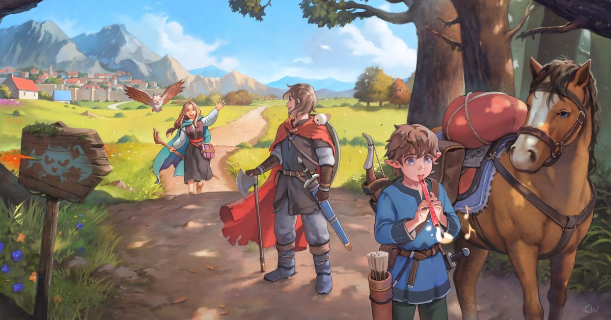

...
'Adventurers' is a digital illustration featuring fantasy themes: 
It is willingly released free / "libre" / "open source" by its authors for usage, sharing, remixing etc. We selected the license CC BY 4.0 which seemed to match our vision.
This page is the canonical url for crediting.
Authors:
The image, full size (3840x2160):

Credits to David Revoy for the inspiration of releasing to Open Source!